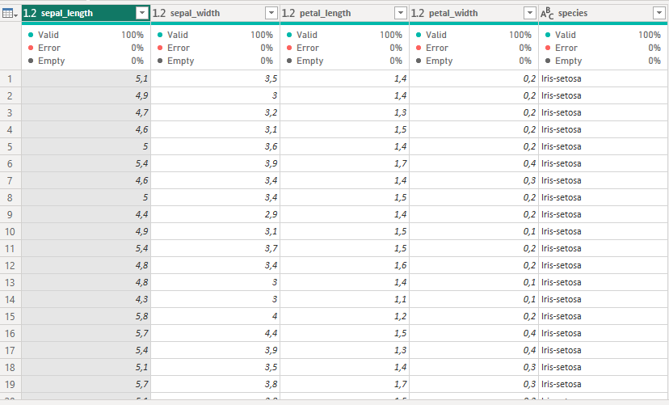

Data Understanding#
Pada bagian ini, saya melakukan pemahaman awal terhadap dataset Iris yang digunakan dalam proyek ini. Dataset diambil dari Kaggle, lalu disimpan pada database MySQL dan PostgreSQL.
Struktur Data#
Dataset Iris yang digunakan memiliki:
Jumlah baris: 150 (setiap baris mewakili 1 bunga iris)
Jumlah kolom: 5 (4 atribut numerikal dan 1 atribut kategorikal)
Daftar kolom dan tipe data:
MySQL#
Kolom |
Tipe Data SQL |
Tipe Analisis |
|---|---|---|
sepal_length |
FLOAT |
Numerikal |
sepal_width |
FLOAT |
Numerikal |
petal_length |
FLOAT |
Numerikal |
petal_width |
FLOAT |
Numerikal |
species |
VARCHAR(50) |
Kategorikal |

PostgreSQL#
Kolom |
Tipe Data SQL |
Tipe Analisis |
|---|---|---|
sepal_length |
DOUBLE PRECISION |
Numerikal |
sepal_width |
DOUBLE PRECISION |
Numerikal |
petal_length |
DOUBLE PRECISION |
Numerikal |
petal_width |
DOUBLE PRECISION |
Numerikal |
species |
TEXT |
Kategorikal |

Kualitas Data#
Missing Values: 
Missing Values: Tidak ditemukan missing values pada dataset Iris (semua kolom terisi penuh).
Duplicate Rows:
Duplicate Rows: Tidak ditemukan baris duplikat pada dataset.
Catatan Outlier:

Deteksi Outlier:Untuk mendeteksi outlier, dibuat scatter chart dengan kombinasi variabel numerikal:
Sepal length vs sepal width
Titik data dari ketiga spesies menyebar rapat.
Tidak ditemukan nilai yang menyendiri jauh dari kelompok → tidak ada outlier ekstrim.
Petal length vs petal width
Terlihat bahwa Iris-setosa membentuk kluster terpisah dengan ukuran kelopak lebih kecil.
Hal ini bukan outlier kesalahan data, melainkan perbedaan alami antar spesies.
Dengan demikian, tidak ada data yang perlu dihapus karena outlier pada dataset ini merupakan bagian dari variasi kelas.
Distribusi Awal#

Distribusi kategori: Hasil: masing-masing 50 data untuk Setosa, Versicolor, Virginica. Setosa (50), Versicolor (50), Virginica (50).
Rentang nilai numerikal:
sepal_length: min 4.3, max 7.9
sepal_width: min 2.0, max 4.4
petal_length: min 1.0, max 6.9
petal_width: min 0.1, max 2.5